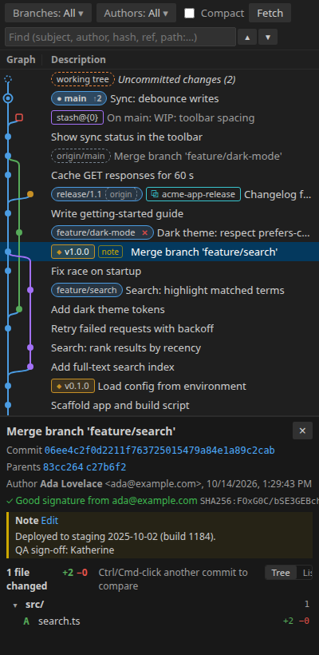

A git graph in the VS Code sidebar
A commit graph in an editor tab takes the place of the file you are working on. Often you want it next to your code instead: in the Source Control sidebar, in the bottom panel under the editor, or in the secondary sidebar on the other side. This page covers the graph VS Code ships in the Source Control view, what it can and cannot do, and how to put a full git graph with a details pane in any of those three places.
Quick answers
| I want to… | Do this |
|---|---|
| See recent history in the sidebar, nothing installed | Open Source Control (Ctrl+Shift+G) and expand the Source Control Graph section |
| A full graph with details, find and filters in the sidebar | Mergeline 0.19: expand Mergeline Graph in the Source Control view, or run Mergeline: Show Commit Graph in Sidebar |
| Put it under the editor or on the right | Drag the view’s title to the bottom panel or the secondary sidebar, or run View: Move View |
| Go back to a big graph | The Open in editor button in the view’s title bar |
VS Code’s Source Control Graph
Since version 1.93 (the August 2024 release), VS Code has a Source Control Graph section in the Source Control view. It draws the history of your current branch together with its upstream, marks incoming and outgoing commits, and lets you choose which other branches to include. Its title bar has fetch, pull and push. Clicking a commit opens its changes.
In VS Code 1.147, its right-click menu on a commit offers Checkout (Detached), Create Branch…, Create Tag…, Cherry Pick, three compare actions (with the remote, with the merge base, or with any other ref) and copying the hash or message. A branch or tag label can be checked out or deleted. (We read this list from the menus in VS Code’s bundled git extension.)
For a quick look at recent history it is good, and it needs nothing installed. It does not have:
- merge, rebase, reset, revert or stash actions;
- a row for uncommitted changes, or stashes in the graph;
- author and date columns;
- a details pane with the commit’s full message and a list of changed files;
- search.
There is more on the built-in graph, git log --graph and extensions in visualize git branches in VS Code.
The Mergeline graph in the sidebar
Mergeline is a free, MIT-licensed git graph for VS Code, Cursor and VSCodium. From version 0.19 it adds a Mergeline Graph view to the Source Control sidebar, below the built-in sections. It is collapsed at first: click its title to expand it, or run Mergeline: Show Commit Graph in Sidebar from the Command Palette.

It is the same graph as the editor tab, not a cut-down one:
- every right-click action on commits, branches, tags and stashes;
- the details pane with the changed files, and diffs that open in the editor;
- find, the Branches and Authors filters, the Compact checkbox and Fetch.
To fit a narrow view, some things start hidden or stay in the editor tab:
- The Date, Author and Commit columns are hidden. Right-click the column header to show them. The sidebar remembers its own columns and widths, separately from the editor tab.
- The Remote branches toggle, First parent, the commit Order, Patch and Remotes… sit in the sidebar toolbar’s … menu, next to the find box (from 0.20; in 0.19 they were only in the editor tab).
The view’s title bar has two buttons: Refresh, and Open in editor, which opens the same repository in an editor tab. You can keep both open. After an action in either one, both show the result; a view that is hidden catches up when you show it again.
A sidebar graph is Git Graph’s feature request #781, “(Minimal) Git Graph View in Side Panel”, opened in August 2023. When we checked on 20 November 2026 it was still open, with 8 thumbs-up.
Mergeline is not on the VS Code Marketplace yet. Download the .vsix from GitHub and run Extensions: Install from VSIX… (full steps).
Move it to the panel or the secondary sidebar
Views in VS Code are not fixed to the container they start in. This works for the Mergeline Graph view and for the built-in Source Control Graph:
- Drag the view’s title (the bar with its name) onto the bottom panel, next to Terminal and Problems, or onto the secondary sidebar. Open the secondary sidebar first with View: Toggle Secondary Side Bar Visibility if it is closed.
- Or use the Command Palette: run View: Move View, pick the view, then pick where it should go.
- To put it back, drag it again, or right-click its title and choose Reset Location.
In the bottom panel the graph gets the full width of the window, which suits a wide table: show the Date and Author columns again from the column header. VS Code remembers where you put a view.
Sidebar or editor tab?
- Sidebar or panel: keep the graph in sight while you edit, check what you just committed, select a commit and open a file diff without losing your place in the editor.
- Editor tab: rebasing, comparing branches, reading long commit messages, or anything that needs a wide table.
The status-bar button, the Source Control title-bar button and Mergeline: Show Commit Graph still open the editor tab, as before.
FAQ
Why is the view empty or collapsed?
It starts collapsed so it does not push the built-in sections down. Click Mergeline Graph in the Source Control view to expand it. The folder must be a git repository and trusted, as for the editor tab.
Can I hide the built-in Source Control Graph?
Yes. Right-click any section title in the Source Control view and untick Source Control Graph. The same menu hides or shows Mergeline Graph.
Does a second graph slow VS Code down?
The view loads nothing until you expand it for the first time. After that, each graph loads its own first page of commits (500 by default, setting mergeline.initialCommits) and draws only the rows on screen, and a graph you cannot see waits until it is shown again to catch up with changes.
Related: visualize git branches in VS Code, compact graph, filter the graph by branch and a maintained alternative to Git Graph.